Events with a set of senders and a set of receivers: an email to several recipients, a bill with a sponsor and cosponsors, a question thread with its participants, a paper’s authors citing a set of references. They are the input of relational hyperevent models; see the hyperedge article for the data model.
The data catalogue lists every dataset with its licence. Figures and numbers on this page are aggregates computed from the files as published; each section links the source and the code that reads it.
| dataset | events | actors | licence | amorem |
|---|---|---|---|---|
| Enron email with recipient lists (Perry & Wolfe) | 21,635 | 154 | none stated | obtain from source |
| Benson higher-order data: email-Enron, email-Eu, congress-bills | 282,049 | 1,718 | none stated | obtain from source |
| Benson ScHoLP timestamped simplices | 719,792 | 176,445 | none stated | obtain from source |
| XGI-DATA: email-enron, senate-bills, sfhh-conference hypergraphs | 10,885 | 143 | CC BY 4.0 per Zenodo record (sfhh-conference derives from SocioPatterns CC BY-NC-SA) | per dataset |
| US Congress bill status, 118th Congress (sponsors, cosponsors) | 16,213 | 553 | public domain (17 U.S.C. 105) | bundled as congress_bills_118,
congress_members_118
|
| OpenAlex: works of the journal Social Networks | 1,894 | 43,066 | CC0 1.0 | can bundle |
Enron email with recipient lists (Perry & Wolfe)
Source: https://github.com/patperry/interaction-proc · Licence: none stated · Status in amorem: no licence stated: not redistributed; obtain from the source.
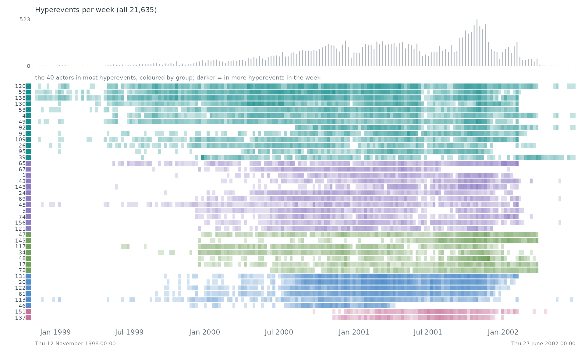
When. Each row is one of the 40 actors who take part in most of the 21,635 hyperevents, coloured by group (modularity on co-membership); a cell is darker the more hyperevents the actor joined in that stretch of time. The grey bars on top count all hyperevents.
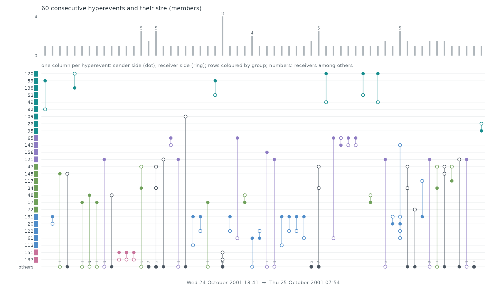
Hyperevent by hyperevent. 60 consecutive hyperevents, Wed 24 October 2001 13:41 to Thu 25 October 2001 07:54, one per column: the bar on top is its size, and the line joins its members among the rows above (dot: sender side, ring: receiver side). Members outside these 40 rows are counted in the bar but not drawn.
Statistical profile.
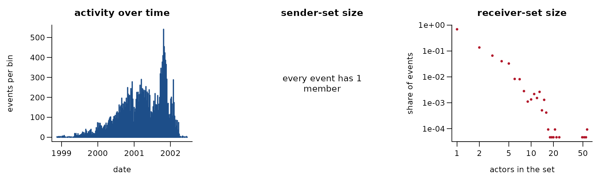
21,635 hyperevents involving 154 distinct actors (senders and receivers together). Sender sets have on average 1.00 members (largest 1), receiver sets 1.77 (largest 57). 81.0% of events repeat an earlier event with exactly the same sender and receiver sets. one sender -> recipient set per message, Enron executives 1998-2002
Get the data
download.file("https://raw.githubusercontent.com/patperry/interaction-proc/master/data/enron/README.md", "README.md", mode = "wb")
download.file("https://raw.githubusercontent.com/patperry/interaction-proc/master/data/enron/employees.tsv", "employees.tsv", mode = "wb")
download.file("https://raw.githubusercontent.com/patperry/interaction-proc/master/data/enron/messages.tsv", "messages.tsv", mode = "wb")
download.file("https://raw.githubusercontent.com/patperry/interaction-proc/master/data/enron/recipients.tsv", "recipients.tsv", mode = "wb")
download.file("https://raw.githubusercontent.com/patperry/interaction-proc/master/data/enron/schema.sql", "schema.sql", mode = "wb")
download.file("https://raw.githubusercontent.com/patperry/interaction-proc/master/data/enron/create.sh", "create.sh", mode = "wb")
download.file("https://raw.githubusercontent.com/patperry/interaction-proc/master/data/enron/EmpInfo.pdf", "EmpInfo.pdf", mode = "wb")
download.file("https://raw.githubusercontent.com/patperry/interaction-proc/master/data/enron/employeeDirsChp3New.txt", "employeeDirsChp3New.txt", mode = "wb")
download.file("https://raw.githubusercontent.com/patperry/interaction-proc/master/data/enron/employees.json", "employees.json", mode = "wb")The reader that builds the hyperevent table is
readers[["enron-perry-wolfe"]] in data-raw/catalogue/readers.R.
Benson higher-order data: email-Enron, email-Eu, congress-bills
Source: https://www.cs.cornell.edu/~arb/data/ · Licence: none stated · Status in amorem: no licence stated: not redistributed; obtain from the source.
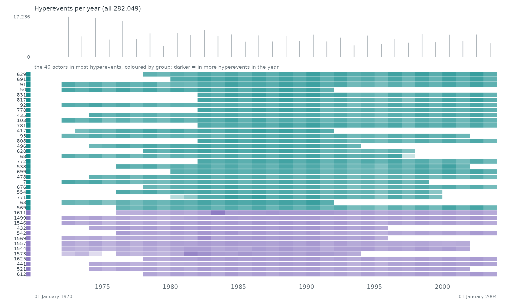
When. Each row is one of the 40 actors who take part in most of the 282,049 hyperevents, coloured by group (modularity on co-membership); a cell is darker the more hyperevents the actor joined in that stretch of time. The grey bars on top count all hyperevents.
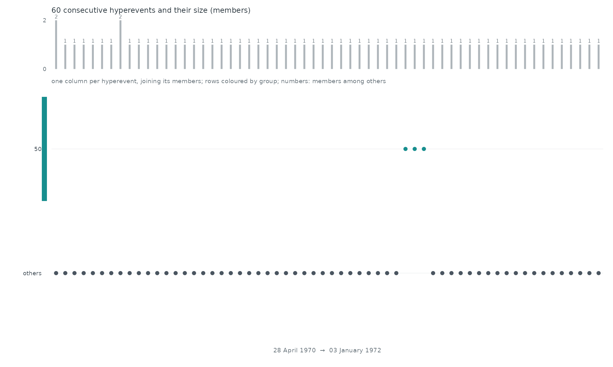
Hyperevent by hyperevent. 60 consecutive hyperevents, 28 April 1970 to 03 January 1972, one per column: the bar on top is its size, and the line joins its members among the rows above. Members outside these 40 rows are counted in the bar but not drawn.
Statistical profile.
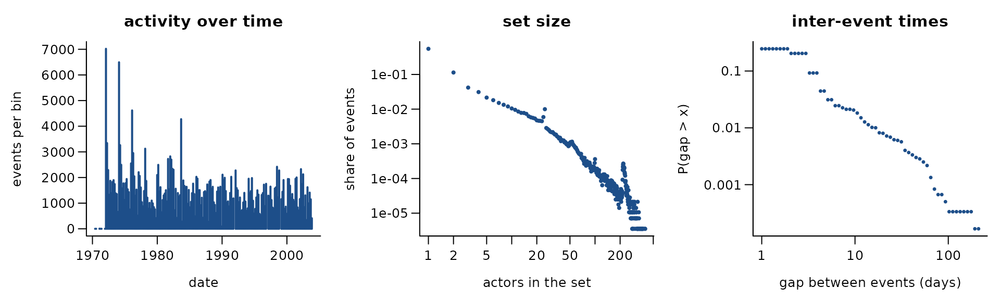
282,049 hyperevents involving 1,718 distinct actors. Sets have on average 8.66 members (largest 400). 62.5% of events repeat an earlier event with exactly the same set. sponsor and cosponsors of each US bill, 1973-2016 (Benson); times converted from MATLAB date numbers to days since 1970
Get the data
download.file("https://drive.usercontent.google.com/download?id=1mzD08q4txDlTO1sQjpqvNVL8wWmtrxA3&export=download&confirm=t", "sos-email-Enron-core.tar.gz", mode = "wb")
download.file("https://drive.usercontent.google.com/download?id=1qSN0ta9fHJd2KgTREq_Nz8ePtfR28WB9&export=download&confirm=t", "sos-email-Eu-core.tar.gz", mode = "wb")
download.file("https://drive.usercontent.google.com/download?id=118tda4_E7ebtTNhKj12IJ9Y71rtJ7UP6&export=download&confirm=t", "email-Enron-full.tar.gz", mode = "wb")
download.file("https://drive.usercontent.google.com/download?id=1FYu5367ijQLDjyGigbf709YpbjocYxif&export=download&confirm=t", "congress-bills-full.tar.gz", mode = "wb")The reader that builds the hyperevent table is
readers[["benson-drive"]] in data-raw/catalogue/readers.R.
Benson ScHoLP timestamped simplices
Source: https://github.com/arbenson/ScHoLP-Data · Licence: none stated · Status in amorem: no licence stated: not redistributed; obtain from the source.
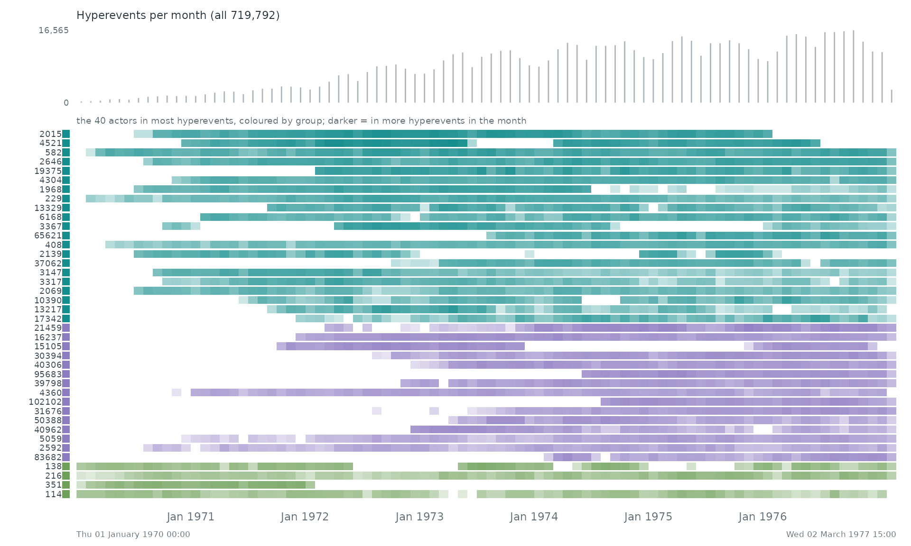
When. Each row is one of the 40 actors who take part in most of the 719,792 hyperevents, coloured by group (modularity on co-membership); a cell is darker the more hyperevents the actor joined in that stretch of time. The grey bars on top count all hyperevents.
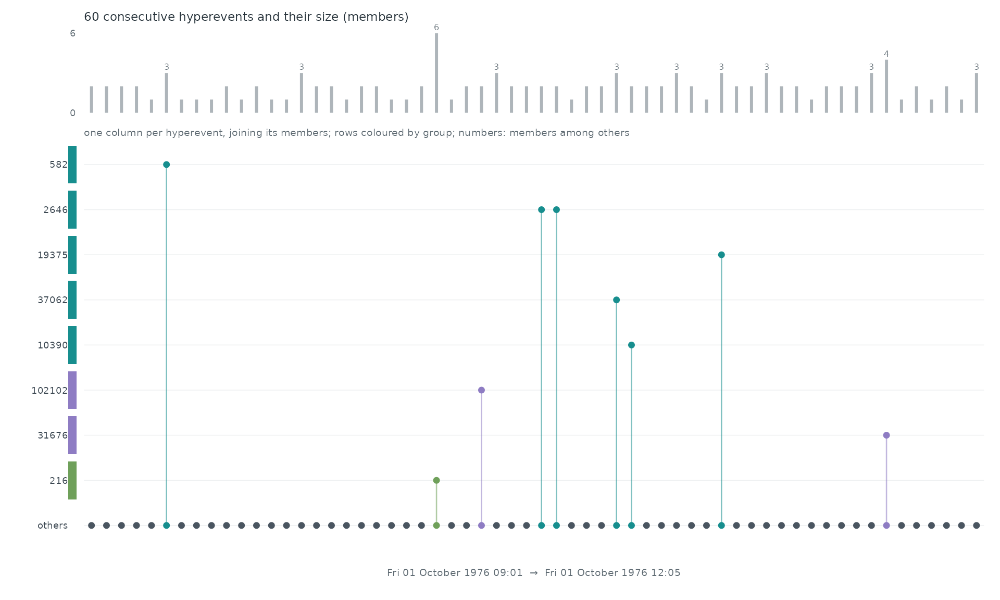
Hyperevent by hyperevent. 60 consecutive hyperevents, Fri 01 October 1976 09:01 to Fri 01 October 1976 12:05, one per column: the bar on top is its size, and the line joins its members among the rows above. Members outside these 40 rows are counted in the bar but not drawn.
Statistical profile.
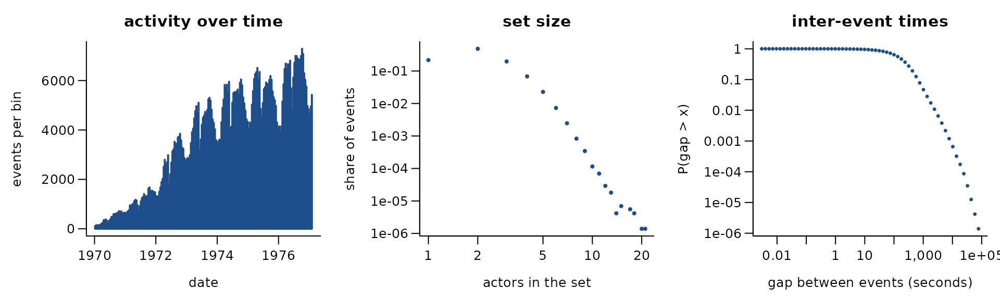
719,792 hyperevents involving 176,445 distinct actors. Sets have on average 2.24 members (largest 21). 17.2% of events repeat an earlier event with exactly the same set. users taking part in each MathOverflow question thread (threads-math-sx); the folder holds 11 more ScHoLP datasets
Get the data
download.file("https://raw.githubusercontent.com/arbenson/ScHoLP-Data/master/README.md", "README.md", mode = "wb")The reader that builds the hyperevent table is
readers[["benson-scholp"]] in data-raw/catalogue/readers.R.
XGI-DATA: email-enron, senate-bills, sfhh-conference hypergraphs
Source: https://zenodo.org/communities/xgi · Licence: CC BY 4.0 per Zenodo record (sfhh-conference derives from SocioPatterns CC BY-NC-SA) · Status in amorem: licence differs by dataset in the collection.
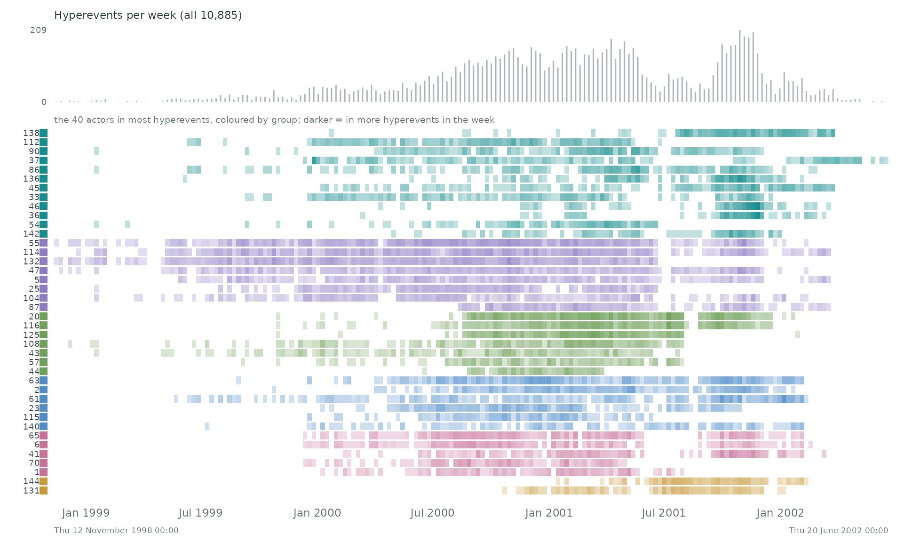
When. Each row is one of the 40 actors who take part in most of the 10,885 hyperevents, coloured by group (modularity on co-membership); a cell is darker the more hyperevents the actor joined in that stretch of time. The grey bars on top count all hyperevents.
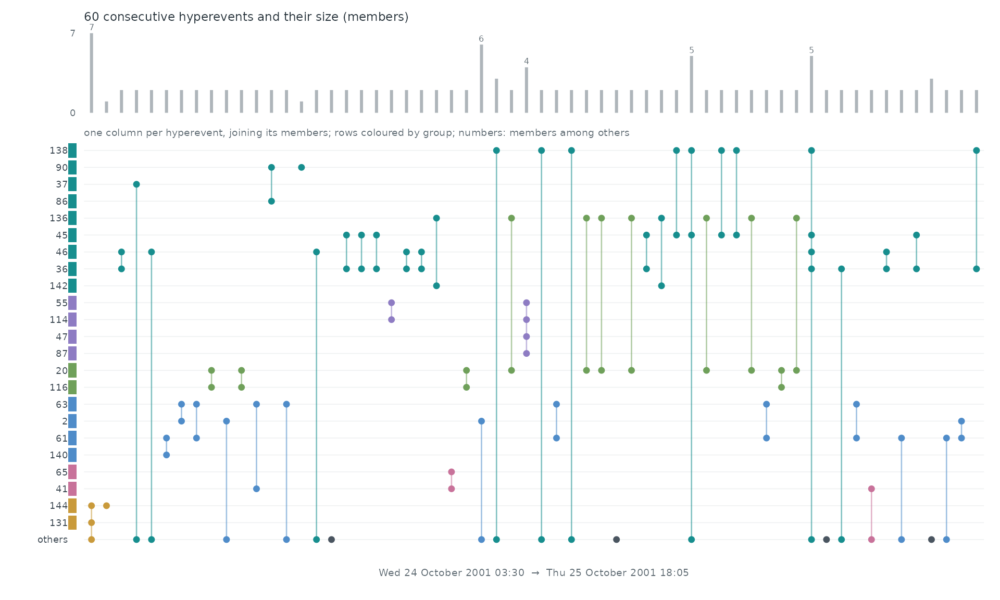
Hyperevent by hyperevent. 60 consecutive hyperevents, Wed 24 October 2001 03:30 to Thu 25 October 2001 18:05, one per column: the bar on top is its size, and the line joins its members among the rows above. Members outside these 40 rows are counted in the bar but not drawn.
Statistical profile.
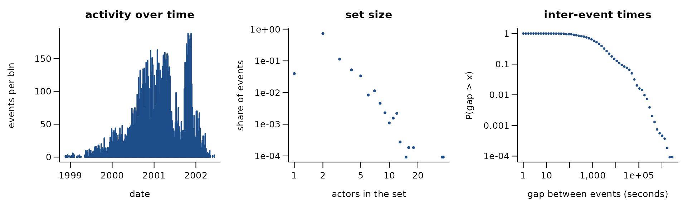
10,885 hyperevents involving 143 distinct actors. Sets have on average 2.47 members (largest 37). 86.1% of events repeat an earlier event with exactly the same set. email-enron hypergraph (all participants of a message as one set); the folder also holds senate-bills and sfhh-conference
Get the data
download.file("https://zenodo.org/records/21909507/files/email-enron.json", "email-enron.json", mode = "wb")
download.file("https://zenodo.org/records/21938408/files/senate-bills.json", "senate-bills.json", mode = "wb")
download.file("https://zenodo.org/records/21938430/files/sfhh-conference.json", "sfhh-conference.json", mode = "wb")
download.file("https://raw.githubusercontent.com/xgi-org/xgi-data/main/LICENSE", "xgi-data_LICENSE", mode = "wb")
download.file("https://raw.githubusercontent.com/xgi-org/xgi-data/main/datasheets/email-enron/README_email-enron.md", "README_email-enron.md", mode = "wb")The reader that builds the hyperevent table is
readers[["xgi-data"]] in data-raw/catalogue/readers.R.
US Congress bill status, 118th Congress (sponsors, cosponsors)
Source: https://www.govinfo.gov/bulkdata/BILLSTATUS ·
Licence: public domain (17 U.S.C. 105) · Status in
amorem: bundled as congress_bills_118,
congress_members_118.

When. Each row is one of the 40 actors who take part in most of the 16,213 hyperevents, coloured by group (modularity on co-membership); a cell is darker the more hyperevents the actor joined in that stretch of time. The grey bars on top count all hyperevents.
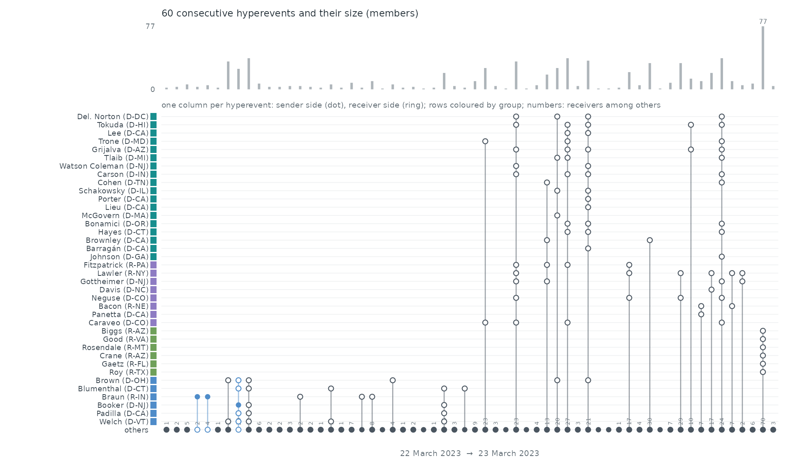
Hyperevent by hyperevent. 60 consecutive hyperevents, 22 March 2023 to 23 March 2023, one per column: the bar on top is its size, and the line joins its members among the rows above (dot: sender side, ring: receiver side). Members outside these 40 rows are counted in the bar but not drawn.
Statistical profile.
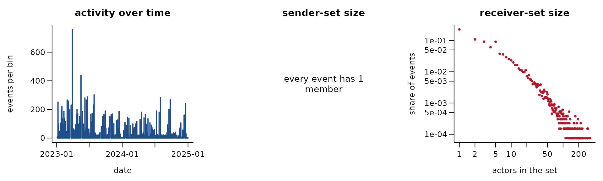
16,213 hyperevents involving 553 distinct actors (senders and receivers together). Sender sets have on average 1.00 members (largest 1), receiver sets 10.02 (largest 331). 23.7% of events repeat an earlier event with exactly the same sender and receiver sets. sponsor -> cosponsors of each House and Senate bill of the 118th Congress (2023-2024)
Get the data
download.file("https://www.govinfo.gov/bulkdata/BILLSTATUS/118/s/BILLSTATUS-118-s.zip", "BILLSTATUS-118-s.zip", mode = "wb")
download.file("https://www.govinfo.gov/bulkdata/BILLSTATUS/118/hr/BILLSTATUS-118-hr.zip", "BILLSTATUS-118-hr.zip", mode = "wb")
download.file("https://www.govinfo.gov/bulkdata/BILLSTATUS/resources/readme.html", "billstatus-readme.html", mode = "wb")The reader that builds the hyperevent table is
readers[["govinfo-billstatus-118"]] in data-raw/catalogue/readers.R.
OpenAlex: works of the journal Social Networks
Source: https://openalex.org/ · Licence: CC0 1.0 · Status in amorem: may be redistributed with attribution.
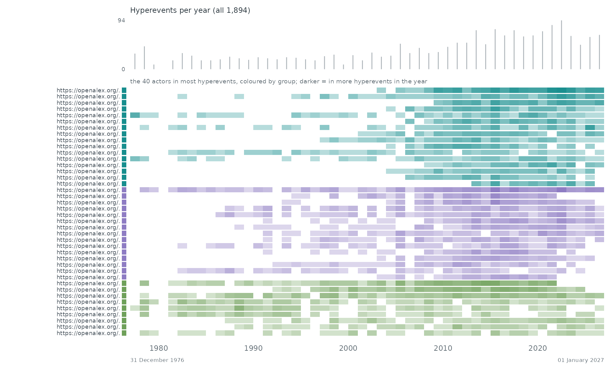
When. Each row is one of the 40 actors who take part in most of the 1,894 hyperevents, coloured by group (modularity on co-membership); a cell is darker the more hyperevents the actor joined in that stretch of time. The grey bars on top count all hyperevents.
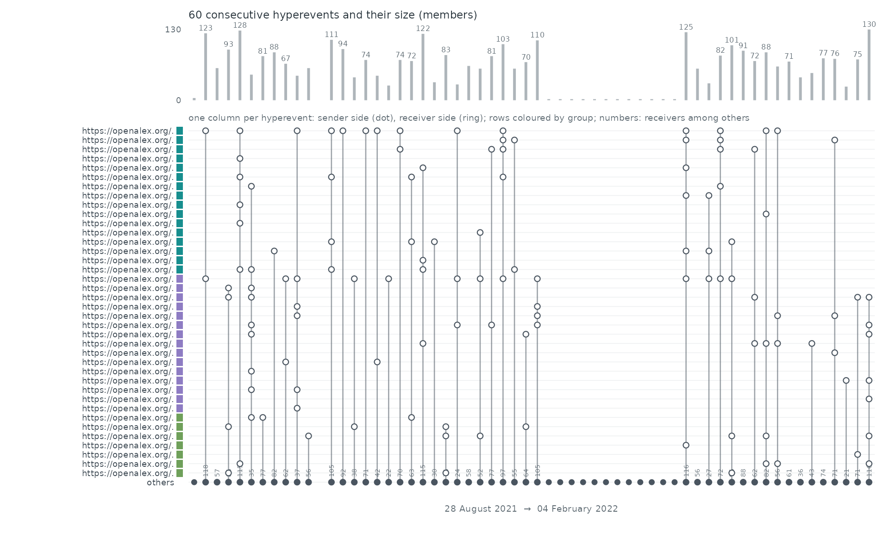
Hyperevent by hyperevent. 60 consecutive hyperevents, 28 August 2021 to 04 February 2022, one per column: the bar on top is its size, and the line joins its members among the rows above (dot: sender side, ring: receiver side). Members outside these 40 rows are counted in the bar but not drawn.
Statistical profile.
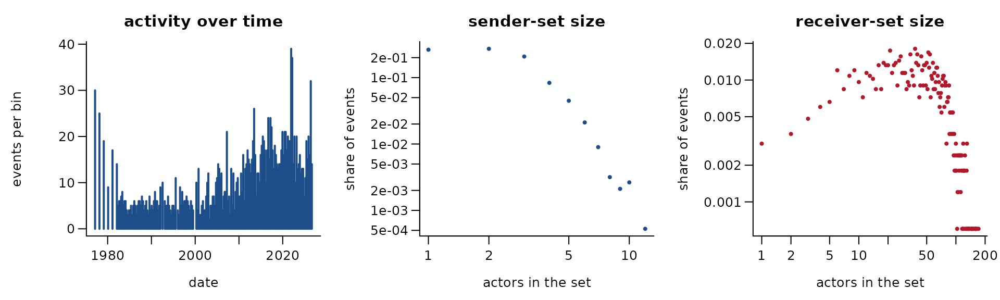
1,894 hyperevents involving 43,066 distinct actors (senders and receivers together). Sender sets have on average 2.26 members (largest 12), receiver sets 43.40 (largest 171). 9.8% of events repeat an earlier event with exactly the same sender and receiver sets. author set -> set of cited works, articles of the journal Social Networks (OpenAlex)
Get the data
download.file("https://api.openalex.org/works?filter=primary_location.source.id:S26186134&select=id,doi,title,publication_date,publication_year,type,authorships,referenced_works,cited_by_count&per_page=200&page=1&sort=publication_date:asc&mailto=richtf@usi.ch", "works-page-001.json", mode = "wb")
download.file("https://api.openalex.org/works?filter=primary_location.source.id:S26186134&select=id,doi,title,publication_date,publication_year,type,authorships,referenced_works,cited_by_count&per_page=200&page=2&sort=publication_date:asc&mailto=richtf@usi.ch", "works-page-002.json", mode = "wb")
download.file("https://api.openalex.org/works?filter=primary_location.source.id:S26186134&select=id,doi,title,publication_date,publication_year,type,authorships,referenced_works,cited_by_count&per_page=200&page=3&sort=publication_date:asc&mailto=richtf@usi.ch", "works-page-003.json", mode = "wb")
download.file("https://api.openalex.org/works?filter=primary_location.source.id:S26186134&select=id,doi,title,publication_date,publication_year,type,authorships,referenced_works,cited_by_count&per_page=200&page=4&sort=publication_date:asc&mailto=richtf@usi.ch", "works-page-004.json", mode = "wb")
download.file("https://api.openalex.org/works?filter=primary_location.source.id:S26186134&select=id,doi,title,publication_date,publication_year,type,authorships,referenced_works,cited_by_count&per_page=200&page=5&sort=publication_date:asc&mailto=richtf@usi.ch", "works-page-005.json", mode = "wb")
download.file("https://api.openalex.org/works?filter=primary_location.source.id:S26186134&select=id,doi,title,publication_date,publication_year,type,authorships,referenced_works,cited_by_count&per_page=200&page=6&sort=publication_date:asc&mailto=richtf@usi.ch", "works-page-006.json", mode = "wb")
download.file("https://api.openalex.org/works?filter=primary_location.source.id:S26186134&select=id,doi,title,publication_date,publication_year,type,authorships,referenced_works,cited_by_count&per_page=200&page=7&sort=publication_date:asc&mailto=richtf@usi.ch", "works-page-007.json", mode = "wb")
download.file("https://api.openalex.org/works?filter=primary_location.source.id:S26186134&select=id,doi,title,publication_date,publication_year,type,authorships,referenced_works,cited_by_count&per_page=200&page=8&sort=publication_date:asc&mailto=richtf@usi.ch", "works-page-008.json", mode = "wb")
download.file("https://api.openalex.org/works?filter=primary_location.source.id:S26186134&select=id,doi,title,publication_date,publication_year,type,authorships,referenced_works,cited_by_count&per_page=200&page=9&sort=publication_date:asc&mailto=richtf@usi.ch", "works-page-009.json", mode = "wb")
download.file("https://api.openalex.org/works?filter=primary_location.source.id:S26186134&select=id,doi,title,publication_date,publication_year,type,authorships,referenced_works,cited_by_count&per_page=200&page=10&sort=publication_date:asc&mailto=richtf@usi.ch", "works-page-010.json", mode = "wb")The reader that builds the hyperevent table is
readers[["openalex-social-networks-journal"]] in data-raw/catalogue/readers.R.